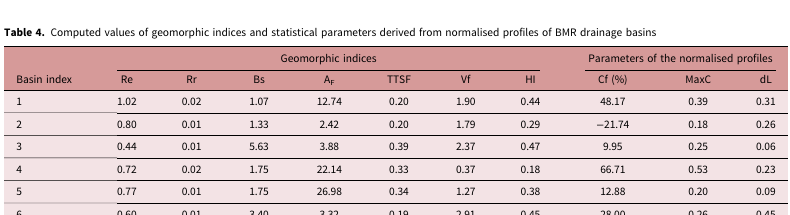
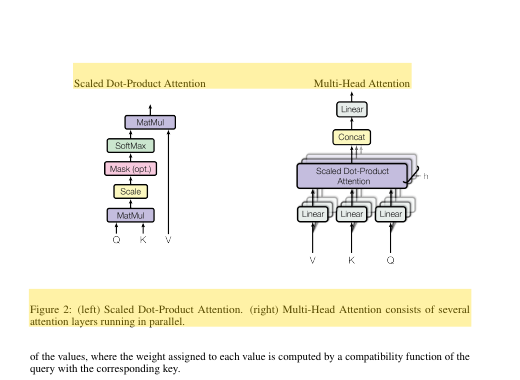
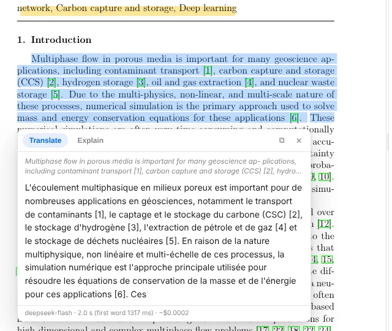

Translate and read PDFs as structured documents
RockTranslate rebuilds a PDF page as HTML with pdf2htmlEX, regroups lines into paragraphs and tables, translates them with the LLM of your choice, and prints the result with the original layout. The same analysis gives you the document's structure as data.
Install
Windows desktop app. Download RockTranslate_Setup_v2.0.6.exe. It includes the layout engine (pdf2htmlEX 0.18.8, native 64-bit).
Python package (Windows, Linux, macOS), Python 3.9 or newer:
pip install rocktranslate # CLI and Python API
pip install "rocktranslate[gui]" # plus the desktop interfaceCheck the setup: the command lists the layout engine, the browser used for measuring and printing, and the API keys it found.
rocktranslate doctorNothing else to install by hand. On Windows the engine is downloaded on first use if it is not bundled; on Linux the official pdf2htmlEX AppImage is extracted automatically. Exact line measurement uses an installed Edge or Chrome.
First translation
export DEEPSEEK_API_KEY=sk-...
rocktranslate paper.pdf -l French -p 1-2
# -> paper_translated.pdf (pages 1-2, same layout, in French)import rocktranslate
doc = rocktranslate.translate("paper.pdf", lang="French", pages="1-2",
model="deepseek/deepseek-flash")
print(doc.output_pdf, doc.report.cost_usd)Open a PDF: the original appears on the left while the layout is prepared on the right. Choose Translation → Translate (or a page range). Export with File → Export (Ctrl+S), which opens your browser's print dialog: choose Save as PDF.
Models and API keys
Any model reachable through LiteLLM works. Pass the route with -m (CLI) or model= (Python). Keys are read from the provider's usual environment variable, from the desktop app's settings, or passed explicitly.
| Provider | Model route | Key variable |
|---|---|---|
| DeepSeek | deepseek/deepseek-flash | DEEPSEEK_API_KEY |
| Google Gemini | gemini/<model> | GEMINI_API_KEY |
| OpenAI | openai/<model> | OPENAI_API_KEY |
| Anthropic | anthropic/<model> | ANTHROPIC_API_KEY |
| Ollama (local, offline) | ollama/<model> with --base-url http://localhost:11434 | none |
Translate from the command line
rocktranslate paper.pdf -l German -p 1-2 -o out/paper_de.pdfWith -p, only the requested pages are converted, so a range of a large PDF starts in seconds. The layout analysis is cached per page range, and translations are cached per document, language and model: a second run of the same pages costs nothing.
Measured on the 40-page reference paper (pages 1-2, Windows laptop): conversion 3 s, layout analysis 8 s, translation 10 s, PDF export 15 s on a warm run.
Translate from Python
import rocktranslate
doc = rocktranslate.translate(
"paper.pdf",
lang="Spanish",
model="deepseek/deepseek-flash",
pages="1-5",
render_pdf=True, # False: structured outputs only, no PDF
)
doc.to_markdown("paper.es.md", bilingual=True)
for e in doc.by_type("Section"):
print(e.text, "->", e.translation)translate() returns the same Document as extract(), where every element also carries translation (and tables table_translation). doc.report holds tokens, cost, time and failures.
Outputs and formats
-f value | File | Content |
|---|---|---|
pdf | paper_translated.pdf | Translated PDF with the original layout (default) |
json | paper_german.json | Elements with page, box, original text and translation |
md | paper_german.md | Translated Markdown; with --bilingual, each original paragraph followed by its translation |
chunks | paper_german.chunks.json | Section-aware chunks with their boxes |
Cost and caching
A page of a scientific article costs about $0.002 with deepseek/deepseek-flash (page 1 of Attention Is All You Need: 3,315 tokens, $0.0019). Numbers, formulas and symbols are not sent to the model. Nothing is paid twice: cached translations are reused when the same text is translated again into the same language with the same model.
Structured extraction
rocktranslate.extract() returns a Document: a list of typed elements in reading order. It runs locally, needs no API key and costs nothing.
import rocktranslate
doc = rocktranslate.extract("paper.pdf") # pages="1-3", password="..."
print(doc)
# <Document 'paper.pdf': 531 elements (135 NarrativeText, 86 Reference,
# 31 Section, 11 Formula, 5 FigureCaption, 4 Table, 1 Title, ...)>
doc.to_markdown("paper.md")
doc.to_json("paper.json")
print(doc.title)
for table in doc.tables:
print(table.page, table.table[:2]) # rows x cellsrocktranslate extract paper.pdf -f json,md,chunks -p 1-10
| 1 | 1.02 | 0.02 | 1.07 | 12.74 | 0.20 | 1.90 | 0.44 | 48.17 | 0.39 | 0.31 |
| 2 | 0.80 | 0.01 | 1.33 | 2.42 | 0.20 | 1.79 | 0.29 | −21.74 | 0.18 | 0.26 |
| 3 | 0.44 | 0.01 | 5.63 | 3.88 | 0.39 | 2.37 | 0.47 | 9.95 | 0.25 | 0.06 |Element types
| Type | Meaning | In Markdown |
|---|---|---|
Title | Document title (largest multi-word text near the top of page 1) | # |
Section | Heading; category_depth from its numbering (3.2.1 → 2) | ## to ###### |
NarrativeText | Paragraph, regrouped across lines and columns | paragraph |
ListItem, Reference | List entries; bibliography entries after a References heading | - |
Table | Rows × cells in table, HTML in text_as_html | pipe table |
FigureCaption, TableCaption | Captions starting with Figure / Fig. / Table | italic |
Formula | Displayed equation pieces | code block |
Footnote | Small text at the bottom of the page, with its mark | quote |
Image | A captioned figure rendered as PNG (photos, maps, vector plots); image_path in JSON |  |
Header, Footer, FigureText | Running headers, page numbers, stamps, words drawn inside figures | left out |
JSON schema
Each element follows Unstructured's layout. to_json(unstructured=True) also maps our types to Unstructured's names (Section → Title, TableCaption → FigureCaption…), so existing pipelines can read it.
{
"type": "Section",
"element_id": "2f93c78ffa05077345dd7301e50c9ccd",
"text": "3.2.1 Scaled Dot-Product Attention",
"metadata": {
"page_number": 4,
"coordinates": {
"points": [[108.0, 337.49], [108.0, 358.7], [264.13, 358.7], [264.13, 337.49]],
"system": "PDFPoints",
"origin": "top-left"
},
"parent_id": "2bc82002054ba39d4452522b7f29bb3e",
"category_depth": 2,
"font_size": 9.96
}
}Real element from Attention Is All You Need. Ids are stable: the same document gives the same ids. After translate(), the metadata also holds translation (and table_translation for tables).
Chunks for RAG
doc.chunks(max_characters=1500) groups whole elements of one section up to the size limit. A chunk never mixes two sections and never cuts an element. Each one keeps the page and box of its elements, so a retrieved chunk can be shown in the PDF.
{
"text": "Recurrent neural networks, long short-term memory [13] and gated …",
"section": "1 Introduction",
"pages": [2],
"element_ids": ["b47cb8d9…", "74fe378b…"],
"boxes": [[2, [108.0, 85.56, 504.36, 150.28]], [2, [108.0, 145.58, 504.47, 243.03]]],
"translation": null
}Search and highlight
doc.search() matches every word of the query, ignoring case and accents, in the original text and in the translation. doc.highlight() writes a copy of the source PDF with the elements framed at their exact position.
doc = rocktranslate.extract("attention.pdf")
hits = doc.search("multi-head attention") # 10 elements on pages 1-5
doc.highlight(hits, "attention.pdf", "attention_hits.pdf")
Reading assistant 2.0.6
In the desktop app, read the original and get help on the passage you are reading. Every action uses the model of Settings → AI model and shows its time and cost.

- Selection: a toolbar appears; Translate (Ctrl+T), Explain (Ctrl+E), Copy (clean text), Copy + citation, Highlight (Ctrl+H). The same actions are in the right-click menu.
- Links: hover a citation, figure, table or equation link to preview its target; Go there, DOI, Open & translate for arXiv references.
- Side panel (Ctrl+B): Contents (bookmarks, or detected headings; ∑ summarizes a section), Search in the original and the translation (Ctrl+F), Ask (Ctrl+J) with verbatim quotes that open the exact passage, Notes (exported as Markdown), Glossary.
- Paper glossary: Generate builds the key terms with one translation each; edit them; when Use for translations is on, every translation of the document follows them.
- Tools menu: continuous translation of the pages you read, night reading, snapshot of an area (Ctrl+Shift+S), page as an image, bilingual side-by-side PDF, notes export, command palette (Ctrl+K).
- Reading comfort: the app reopens each document at the last page read; tabs keep several PDFs open; hold Alt in the translation-only view to see the original.
- Default reader: the installer registers Open with RockTranslate for PDFs and can make it the default app; a PDF opened while the app runs goes to the open window.
Ask, summarize, glossary
The same assistant from the command line and from Python. Inputs can be files or links.
rocktranslate ask paper.pdf "Which dataset is used?" -l French # answer + quotes with pages
rocktranslate summarize paper.pdf --section 3.2 -l French
rocktranslate glossary paper.pdf -l French -o terms.txt
rocktranslate paper.pdf -l French --glossary terms.txt --side-by-side paper_bilingual.pdf
rocktranslate explain "softmax(QK^T / sqrt(d_k)) V" -l Frenchimport rocktranslate
result = rocktranslate.ask("https://arxiv.org/abs/2109.03697", "What is the test MPE of U-FNO?", lang="French")
result["answer"], result["quotes"] # [{"page": 32, "quote": "test µ 0.0299 0.0276 0.0224 0.0161"}]
terms = rocktranslate.glossary("paper.pdf", "French")
doc = rocktranslate.translate("paper.pdf", "French", glossary=terms, side_by_side="paper_bilingual.pdf")
rocktranslate.extract("paper.pdf").toc() # contents, even without bookmarksMeasured on a 37-page paper: a question ≈ $0.006, a glossary ≈ $0.006, a translated selection ≈ $0.0002.
CLI reference
rocktranslate <pdf>
| Option | Description |
|---|---|
input | A PDF file, or an http(s) link to one (arXiv /abs/ pages work) |
-l, --lang | Target language (default: French) |
-o, --output | Output PDF (default: <input>_translated.pdf) |
-p, --pages | Page range, e.g. "1-3, 5"; only those pages are converted |
-m, --model | LiteLLM route, e.g. deepseek/deepseek-flash |
-k, --api-key | API key (default: environment variable or desktop settings) |
-t, --temp | Sampling temperature |
-f, --format | pdf, json, md, chunks, comma-separated |
--bilingual | Markdown with each original paragraph followed by its translation |
--skip-references | Keep the bibliography in its original language (fewer tokens) |
--glossary FILE | Terminology to follow, one term -> translation per line |
--auto-glossary | Build the paper's glossary first, then translate with it |
--side-by-side PDF | Also write a bilingual copy: original page | translated page |
--parallel | Concurrent LLM requests (default: 4) |
--base-url | Custom API endpoint (Ollama, proxies) |
--password | Password of a protected PDF |
--keep-html | Also save the translated HTML |
rocktranslate extract <pdf>
-f json,md,chunks (default json,md), -o output base path, -p page range, --password, --no-images (figures are written as PNG beside the outputs by default).
rocktranslate ask | summarize | glossary | explain
ask <pdf> "question" (--json), summarize <pdf> [--section 3.2], glossary <pdf> [-o FILE] [--max-terms 30], explain "text" (- reads stdin); all take -l, -m, -k, --base-url.
rocktranslate doctor
Checks pdf2htmlEX, the PDF renderer, the GUI package and the API keys.
Python API reference
rocktranslate.extract(pdf_path, pages=None, password=None, measure=True) → Document- Structure only.
measure=Falseskips the browser measurement and estimates line widths.images=True(default) renders every captioned figure as anImageelement (PNG);doc.images,doc.save_images(folder). rocktranslate.translate(pdf_path, lang="French", model=…, api_key=None, pages=None, output_pdf=None, render_pdf=True, parallel=4, password=None, **options) → Document- Translated Document;
doc.output_pdfanddoc.report(tokens, cost, seconds, failures). RaisesRuntimeErrorwhen nothing could be translated. rocktranslate.translate_text(text, lang) / explain(text, lang) → str- A passage copied from a PDF, translated or explained (broken lines and hyphens are rebuilt).
on_delta=callablereceives the answer while it streams. rocktranslate.ask(pdf, question, lang) → {"answer", "quotes": [{"page", "quote"}]}- Quotes are verbatim and checked against the paper.
rocktranslate.summarize(pdf, lang, section=None) → str·rocktranslate.glossary(pdf, lang) → [{"term", "translation", "note"}]- Pass the glossary to
translate(glossary=…);translate(side_by_side="out.pdf")also writes the bilingual copy (or callrocktranslate.side_by_side(original, translated, output)). Documentelements,title,tables,by_type(*types),sections(),toc(),section_text(heading),to_json(path=None, unstructured=False),to_markdown(path=None, translated=False, bilingual=False, page_markers=False),to_text(translated=False),chunks(max_characters=1500),search(query),highlight(elements, source_pdf, output_pdf).Elementtype,text,html,page,bbox(x0, y0, x1, y1 in points from the top-left),element_id,parent_id,depth,font_size,table,translation,translation_html,table_translation.RockTranslator(model, api_key, target_lang, temperature, parallel, glossary, …)translate_document(pdf, output, pages, structured=False, render_pdf=True) → TranslationReport, for fine control and reuse of one configuration.
Desktop app
- Side-by-side view: original PDF on the left, reconstructed layout on the right, same zoom, synchronized scrolling.
- Layout prepared at opening, in the background and at no cost, so translation starts at once.
- Original text on hover: View → Original text on hover, or hold Ctrl while hovering.
- Progress panel with pages, segments, time, tokens and cost; collapse or close it from its corner buttons.
- Export: File → Export opens your browser's print dialog; Export without browser writes the PDF automatically.
- Settings → Clear the translation cache prepares the open document again from scratch.
Troubleshooting
- The conversion stops or takes long on a large PDF
- RockTranslate watches pdf2htmlEX: a conversion that makes no progress and uses no CPU is stopped and retried automatically, up to three times. Converting only the pages you need (
-p) is the fastest option. - Paragraphs look squeezed
- Exact line measurement needs Edge, Chrome or the small headless engine RockTranslate downloads in the background. Run
rocktranslate doctorto see which one is used. - The text stays in the original language
- Check the API key in the logs (401 / 403), or clear the translation cache from the Settings menu so the document is prepared again.
Known limits
- Scanned PDFs (images without a text layer) need OCR, which RockTranslate does not do yet.
- Displayed equations are only partly reassembled into one element.
- Tables whose rows are drawn as a single text run are not split into cells yet; multi-level table headers can be split.
- Publisher fonts embed only the glyphs they use: translated characters outside them use a fallback font.